-
Ok so i have put together a bit of a guide on how to swap your 88 Turbo Vented rear brake calipers on to your 1985 Turbo rear control arms.
This Method uses the original 85 rear control arms, and requires 20mm wheel spacers. it works with factory 15" wheels
This requires Machined work on a lathe, and some grinding. It's not a bolt on and go easy swap, if you don't like it go and buy a Honda But what it does do is allow you to run a decent rear brake setup on your 85 Turbo.
DO NOT ASK ME IF THIS WORKS ON ANY OTHER MODEL, it works on a 1985 Turbo, it may work on an 86 Turbo but i can't confirm that as i don't have an 86 rear control arm to confirm it is exactly the same.
Tools
1) A decent Place to work
2) Jack stands & typical hand tools for working on cars
3) Brake line clamps & Drip tray
4) Something to chock the wheels
5) Grinder & files
6) Lathe & Drill Press ( or use a shop for this )
Parts Required
Length of 31mm OD Round stock - I used Mild Steel
88 Turbo Rear Calipers complete
Jaguar X Type Rear brake discs - need to re drilled to 5x114 Nissan stud pattern and the center bore needs to be machined out to 68 mm. I recommend you give them your original 85 T rear rotor as a template for the machining so that they can get it
correct. You May also need to have the OD of the rotors machined down by 0.5mm to 1.0mm - especially if you buy cheaper rotors that may not be as perfectly machined as expensive ones.
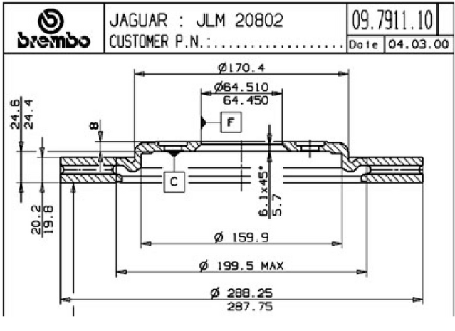
New Set of Pads ( optional but recommended )
New Bake lines ( optional but recommended )
Longer M10 high tensile bolts - 15mm Longer than OEM bolts
Spring washers for your M10 Bolts
Caliper Rebuilt kit & all new Hardware ( optional but recommended )
Step 1
Strip all the old brakes off so you arrive at this stage
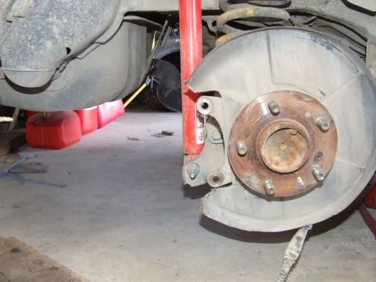
Step 2
Grab some 31mm OD round stock and make up some spacers
Centre hole is 10mm ID and thickness of the spacer is 14.6mm
( the spacer is a bit smaller than it needs to be so that you are able to use diffierent thickness washers to shim it perfectly so that the rotor stays centered to the pad holder bracket.)
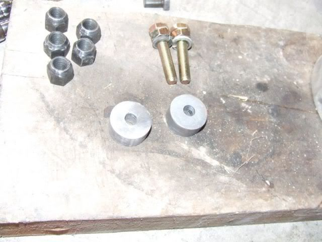
Note how the round stock fits nice and snug into the groove Nissan put into the Control arm
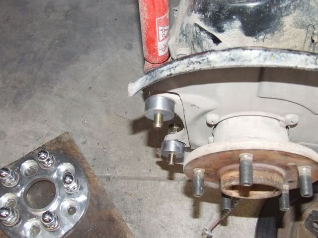
once again , notice how the 31mm OD spacer fits nice and snug on to the pad holding bracket
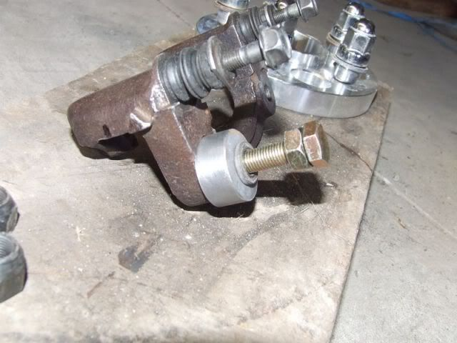
Stet 3
Do a bit of a test fit and bolt it up nice and tight, make sure that it is nice and secure and doesn't move around or snag up. It should look like this
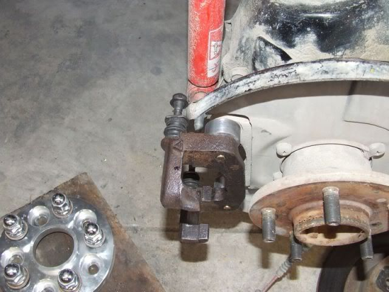
Once you are satisfied that your spacers are working as they should, take the Jag X type Rotor you prepared earlier and give everything a test fit, you may need to experiment with different thickness of washers to get the disc aligned nicely in the caliper bracket.
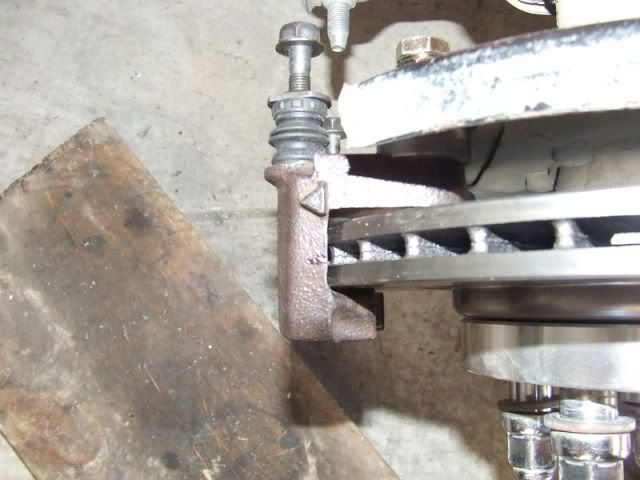
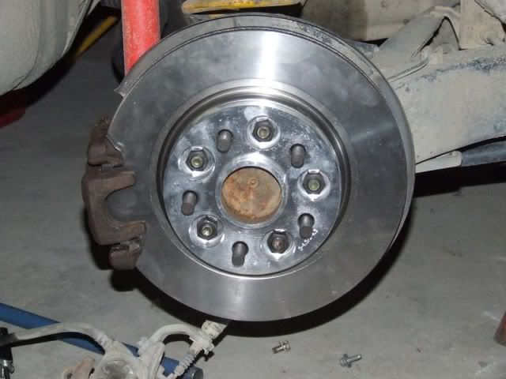r />
with the disc rotor installed spin it round a bit to see if it snags or touches the caliper bracket, it probably will so if this is the case grind on the bracket for a while until the rubbing stops, it doesn't take much, its such a small amount being ground away that it wont affect the strength in any way. After you have done your grinding it should look like this
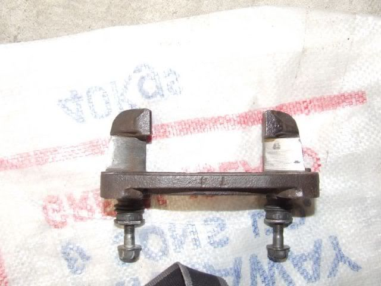
Step 4
Assemble your Caliper bracket / Pad holder with some new hardware and pads
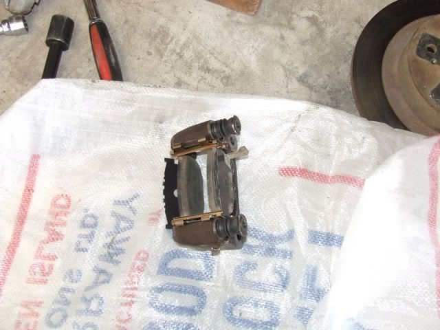
Assemble it all onto the control arm with your spacers and brake rotor and check for any rubbing, make adjustments by carefully grinding as necessary
Step 5
Test fit your brake caliper, i had mine rebuilt, the hand brake cable mounting bracket must be Removed or you will get nowhere.
You will notice that where the Handbrake cable mount goes that there is too much material and it hits the control arm.
I chose to grind the brake caliper itself , Where it gets ground away is only the locating pin , no metal gets ground away where the bolts / thread goes so there is no loss of strength when using the Hand Brake.
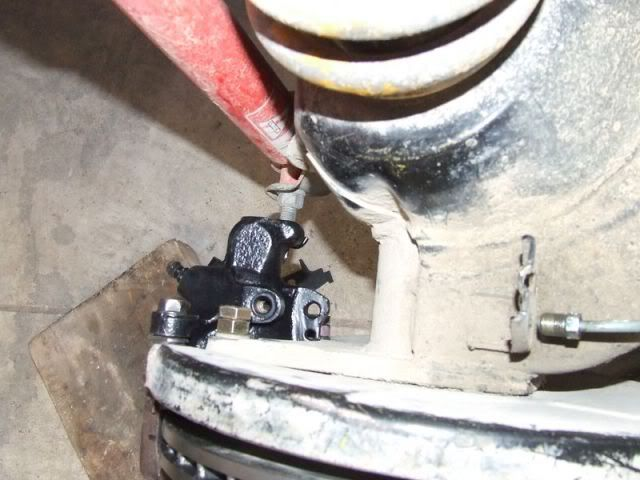
Once this is done, slide the caliper around and make sure it dosn't hit, then repeat the process with the hand brake cable bracket untill it all fits.
NOTE : this test fitting needs to be done with the pads installed, and remember as the pads wear down the clearance will become greater because the caliper is sliding away.
Here is how mine looks all bolted up
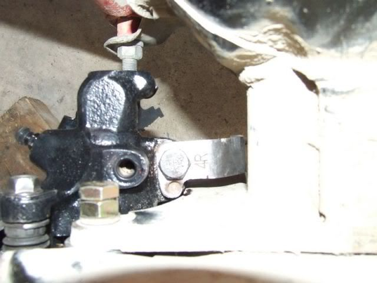
and you can see here that the hand brake cable itself is not affected either.
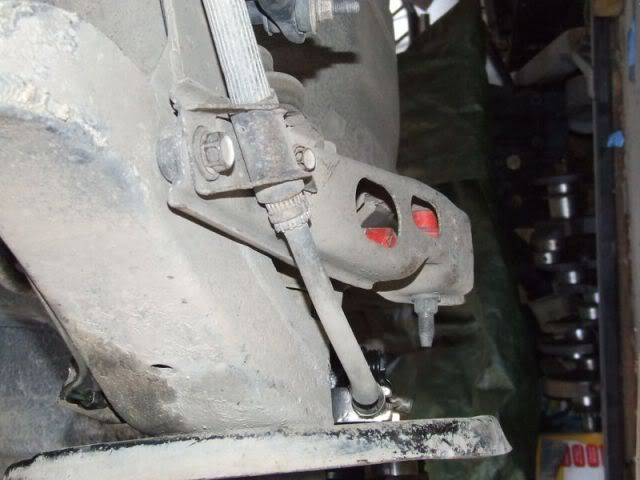
You may wish to grind the control arm down a few mm rather than grinding on the brake caliper, As mentioned before grinding on the brake caliper is not as issue as the locating pin only stops it wiggling around, when the bolt is done up that is what holds the bracket down securely.
When you are all done it should look like this
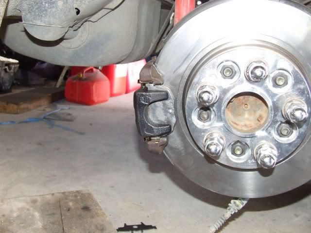
So go and enjoy your new brakes by doing some skids or burnouts or whatever.
Don't forget to check out my How To for front 4 pots on an 85T
you can see that here viewtopic.php?f=24&t=2679285 Turbo Slick Top
__________________________________________________ _____ -
Well done sir and thank you. I vote for STICKY.
1986 300ZX Turbo…sold
1990 Skyline GT-R…new money pit
2014 Juke Nismo RS 6-speed…daily -
there is likely another ford rotor that will fit just as well by only needing the center bore machined to the larger nissan size, but i do not have access to data to investigate further. Cars like the new taurus, ford escape, ford fusion, edge, focus, and transit all use the 5x114.3 pattern.
Ford has a habit of using the same caliper bracket (bridge as they call it) on several cars and even several different calipers. so the hat height may be the same as other ford rotors that use 114.3Nearly all men can stand adversity, but if you want to test a mans character make him a moderator.

Copyright © 2006–. All rights reserved. Privacy Policy